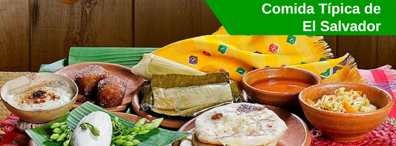

|  | |
Conociendo nuestra cultura gastronomica La gastronomía de El Salvador se basa en productos como el arroz, frijoles, maíz, carnes, ricas frutas y verduras, productos lacteos, además de pescados y mariscos. Entre sus platos típicos hay que destacar la pupusa, que es una tortilla de maíz rellena de queso, frijoles o chicharrones, entre otros ingredientes. Frijoles con arroz, sopa de frijoles, tamales de queso, pollo o gallina. |